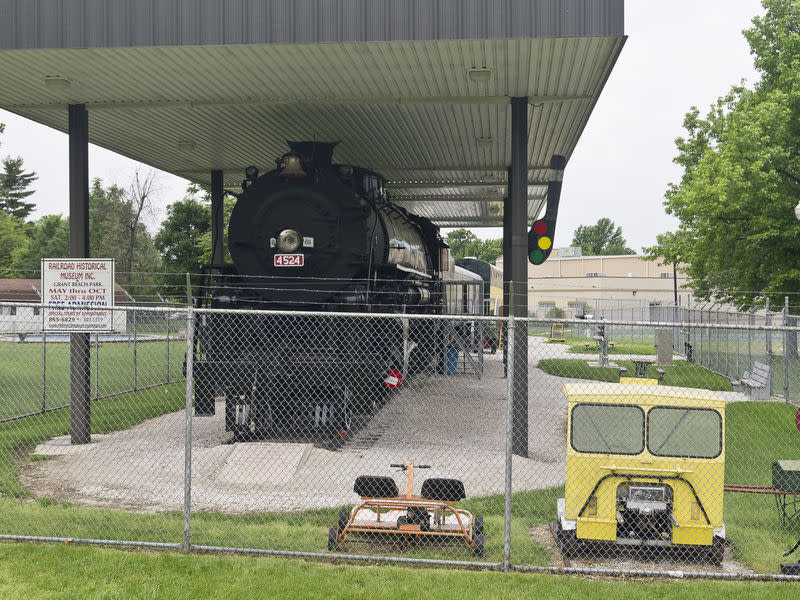
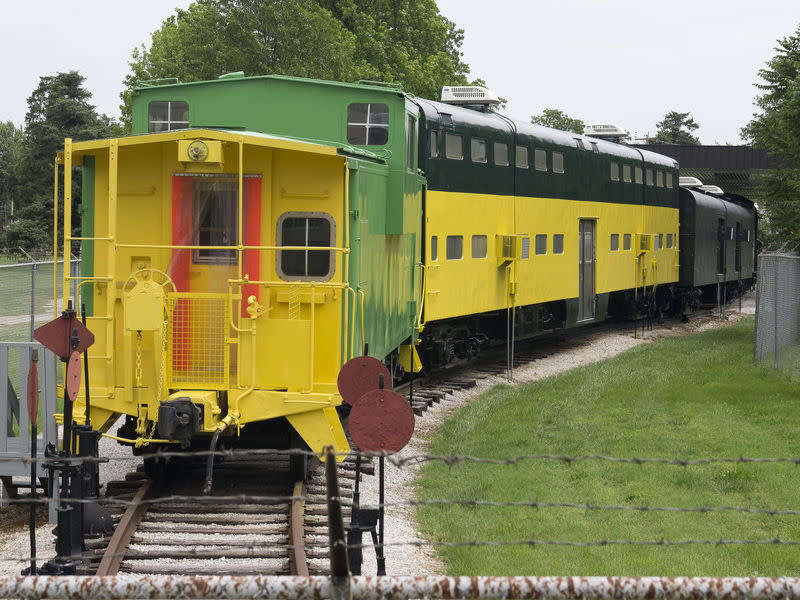

The Railroad Historical Museum, Inc., is dedicated to the preservation of the history of railroading. There are many hands-on things for children to do such as ring the bell and explore the cab of the Frisco 4524 locomotive, the Burlington Baggage Car, the Chicago Northwestern Commuter Car and the Burlington Northern Caboose.
 The museum is located at Grant Beach Park, inside four antique train cars, including a 1943-era Frisco Locomotive No. 4524, installed at the park in 1953. The museum also includes a Burlington Baggage Car, a Chicago and Northwestern Bilevel Commuter Car and a Burlington Northern Caboose. All cars are connected and may be walked through. The museum has artifacts, equipment, photos, paintings, videos and much more from the St. Louis - San Francisco (Frisco) Railroad and other Railroads. There are many hands-on activities for kids and adults.